Guia Prático de BPM
1. Conceitos Fundamentais de BPM e Metodologias
O BPMS automatiza processos, mas sem clareza sobre o que automatizar, há risco de digitalizar ineficiências. O BPM prepara o terreno para uma automação inteligente e eficiente.
- BPMN: Modela visualmente processos. Use para mapear fluxos como aprovação de orçamento, compras, integração de áreas.
- Lean: Elimina desperdícios e agiliza etapas. Use para identificar etapas desnecessárias em processos de obra, suprimentos e administrativos.
- Six Sigma: Reduz defeitos e variações. Aplique em processos críticos como medições, entregas e controle de materiais.
- PDCA: Ciclo de melhoria contínua. Use para revisar e aprimorar processos periodicamente.
Solicitação e Aprovação de Compra de Materiais para Obra
Este processo é vital para garantir que as obras tenham os materiais necessários no prazo, com controle e agilidade. Ao longo dos capítulos, veremos como ele pode ser mapeado, melhorado e automatizado.
2. Diagnóstico Inicial
- Atividades Primárias: Prospecção de clientes, elaboração de propostas, execução de obras, gestão de contratos, entrega e pós-venda.
- Atividades de Suporte: RH, Financeiro, Suprimentos, TI.
- Qual sua função e principais responsabilidades?
- Quais processos você executa ou participa?
- Quais são as maiores dificuldades no dia a dia?
- Onde ocorrem atrasos ou retrabalho?
- Que informações/documentos são essenciais para seu trabalho?
- Como você acredita que o processo poderia ser melhorado?
- Existe algum sistema ou ferramenta que você gostaria de sugerir?
- Identificou todos os processos principais?
- Listou stakeholders internos e externos?
- Entendeu o fluxo básico de cada processo?
- Identificou objetivos estratégicos da empresa?
- Lean: Use para entrevistas e identificar desperdícios/gargalos.
- BPMN: Workshops para desenhar o fluxo AS IS e TO BE.
- Six Sigma: Avalie valor agregado e causas de problemas.
- Dificuldades: Solicitações feitas por e-mail ou papel, aprovações lentas, falta de rastreabilidade.
- Impactos: Obras paradas aguardando material, compras emergenciais mais caras.
- Oportunidades: Padronizar, automatizar e monitorar o processo.
3. Mapeamento de Processo (BPMN)
Obra solicita compra → Coordenador de compras analisa → Diretor aprova → Pedido enviado ao fornecedor.
💡 Clique nos elementos para ver detalhes • Passe o mouse para tooltips
📋 Legenda BPMN - Símbolos Utilizados
- Pools/Raias: Obra, Compras, Diretoria, Controle
- Eventos: Início (solicitação), Fim (pedido enviado), Fim Final (processo completo)
- Gateways: Validação de Orçamento, Verificação de Fornecedor, Gateway de Valor, Aprovação Final
- Artefatos: Pedido, documentos anexos, controles de qualidade
- BPMN: Crie diagramas claros e padronizados para o processo.
- Lean: Após mapear, elimine etapas desnecessárias e agilize o fluxo.
- PDCA: Implemente melhorias e monitore resultados.
- AS IS: Solicitação feita manualmente, aprovações por e-mail, falta de rastreabilidade.
- TO BE: Solicitação via sistema, aprovações automáticas, acompanhamento em tempo real.
4. Levantamento de Requisitos
- Quais informações você recebe para iniciar o processo?
- Quem são os responsáveis por cada etapa?
- Existem aprovações? Quem aprova?
- Quais documentos/formulários são usados?
- Onde ocorrem maiores atrasos?
- Já houve problemas sérios? Quais?
- O que poderia ser automatizado ou simplificado?
- Entrevistou todos os envolvidos?
- Coletou exemplos de todos os documentos?
- Registrou regras de negócio?
- Listou gargalos e dores relatados?
- PMBOK: Estruture projetos de melhoria de processos, defina escopo, cronograma e responsáveis.
- SCRUM/Kanban: Organize equipes para implementação de processos, divida entregas em sprints e acompanhe progresso.
- Formulário digital de solicitação com campos obrigatórios.
- Fluxo de aprovação com notificações automáticas.
- Histórico de todas as solicitações e decisões.
- Permitir anexar orçamentos e documentos.
- Indicadores: tempo médio de aprovação, índice de retrabalho.
5. Registro de Gargalos e Melhorias
Problema: Aprovação demora em média 3 dias úteis.
Causa: Falta de notificação automática; aprovações via e-mail manual.
Impacto: Obras paradas aguardando material.
Melhoria sugerida: Workflow automatizado com alertas no BPMS.
- Lean/Six Sigma: Use ferramentas como Ishikawa, 5 Porquês e análise de causa raiz para identificar e atacar gargalos.
- PDCA: Registre melhorias, implemente, monitore e padronize soluções de sucesso.
- Gargalo: Aprovação depende de e-mails, causando atrasos.
- Melhoria: Notificação automática e painel de pendências.
- Gargalo: Falta de histórico e controle.
- Melhoria: Registro digital e indicadores de desempenho.
6. Validação com as Áreas
- Requisição aberta na obra via BPMS
- Notificação automática para responsável na matriz
- Aprovação/reprovação via sistema, com justificativa
- Acompanhamento do status em tempo real
- Redução do tempo de aprovação
- Eliminação de e-mails perdidos
- Rastreabilidade das decisões
- O fluxo atende às necessidades?
- Alguma etapa ficou de fora?
- Há sugestões de melhoria?
- Todas as áreas participaram?
- Feedbacks registrados e analisados?
- Ajustes realizados?
- Processo validado está documentado?
- SCRUM/Kanban: Sprint reviews para apresentar processos redesenhados e coletar feedbacks.
- PDCA: Rodadas de validação e ajustes até atingir consenso.
- Reunião com obra, compras e diretoria para validar etapas e responsabilidades.
- Ajustes sugeridos: permitir justificativa de reprovação, anexar orçamento alternativo.
- Processo aprovado e pronto para implementação no BPMS.
7. Ferramentas Recomendadas
- Modelagem BPMN: Bizagi Modeler, Camunda Modeler, Draw.io
- Gestão de Requisitos: Excel, Google Sheets, Notion, Trello
- Documentação: Word, Google Docs, Confluence
- Comunicação: Teams, Slack, e-mail corporativo
- BPMS: (Nome do BPMS contratado pela FORTES Engenharia)
- BPMN Modeler: Modelagem visual dos processos.
- Kanban Boards: Gestão ágil de tarefas e projetos de melhoria.
- Planilhas: Controle de indicadores Lean/Six Sigma.
- BPMS para automatizar solicitações e aprovações.
- Kanban/Trello para acompanhar pendências.
- Planilhas para monitorar indicadores de desempenho.
8. Exemplos de Documentos e Templates
- Nome do Processo: Solicitação e Aprovação de Compra de Materiais para Obra
- Objetivo: Garantir agilidade e controle nas aquisições de materiais
- Responsável: Coordenador de Compras
- Stakeholders: Obras, Matriz, Fornecedores, Diretoria
- Entradas: Requisição de Compra
- Saídas: Pedido aprovado ou rejeitado
- Indicadores: Tempo médio de aprovação, número de retrabalhos
- Conceitos de BPM apresentados e compreendidos pela equipe
- Cadeia de valor mapeada
- Processos críticos identificados
- BPMN dos processos AS IS e TO BE desenhados
- Requisitos levantados e validados
- Gargalos e melhorias documentados
- Processo validado pelas áreas
- Pronto para automação no BPMS
- Use BPMN para mapear e documentar processos.
- Aplique Lean para simplificar e eliminar desperdícios.
- Use Six Sigma para elevar qualidade e controle.
- Implemente PDCA para garantir melhoria contínua.
- Gerencie projetos de mudança com PMBOK e SCRUM/Kanban.
- Combine metodologias conforme o contexto: processos rotineiros, projetos de obra ou iniciativas de transformação.
- Formulário padrão de solicitação de compra.
- Fluxograma BPMN do processo.
- Checklists de aprovação e recebimento.
- Relatório de indicadores do processo.
9. Implementação de Processos no Fusion Platform
Plataforma BPMS que transforma os processos mapeados em BPM em soluções digitais automatizadas. Permite criar formulários, fluxos de aprovação, integrações e dashboards de forma visual e intuitiva.
Solicitação de Veículos para Obras e Atividades
Este processo é essencial para garantir que as equipes tenham transporte adequado, com controle de custos, disponibilidade e aprovações necessárias.
- ✅ Processo BPMN validado pelas áreas
- ✅ Formulários e campos definidos
- ✅ Fluxo de aprovações mapeado
- ✅ Usuários e perfis identificados
- ✅ Integrações necessárias listadas
O processo foi modelado no Fusion Platform com as seguintes atividades principais:
- Solicitar Veículo: Preenchimento da requisição pelo solicitante
- Analisar Solicitação: Verificação de disponibilidade e necessidade
- Análise do Aprovador: Gateway de decisão para aprovação/reprovação
- Liberar Veículo: Confirmação e liberação do veículo aprovado
- Notificar Solicitante: Comunicação do resultado da solicitação
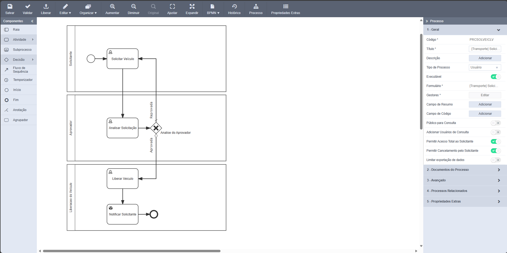
💡 Processo modelado no editor visual do Fusion Platform
📋 Atividades do Processo
Os formulários são a interface principal entre os usuários e o processo automatizado. Uma boa estruturação facilita o preenchimento, reduz erros e melhora a experiência do usuário.
📋 1. Crie uma categoria de formulário condizente com o processo
A categoria deve refletir claramente a natureza do processo que está sendo criado.
- Transporte: Para processos relacionados a veículos, frota, deslocamentos
- Compras: Para solicitações de materiais, equipamentos, serviços
- RH: Para processos de pessoal, férias, treinamentos
- Financeiro: Para aprovações de pagamentos, reembolsos, orçamentos
- Obras: Para processos específicos de execução, medições, entregas
🏷️ 2. Nomenclatura dos Formulários
O formulário deve carregar o nome da categoria e depois seu nome de identificação específico.
[CATEGORIA] + Nome Específico
- [Transporte] Solicitação de Veículos
- [Compras] Requisição de Materiais
- [RH] Solicitação de Férias
- [Financeiro] Aprovação de Pagamentos
- [Obras] Relatório de Medição
Quando houver mais de um formulário para o processo, o formulário principal deve ser identificado com o sufixo 'Principal' além do prefixo e seu nome.
Exemplo com múltiplos formulários:- [Transporte] Solicitação de Veículos Principal
- [Transporte] Solicitação de Veículos - Aprovação
- [Transporte] Solicitação de Veículos - Liberação
Benefício: Isso facilita futuras manutenções, permitindo identificar rapidamente qual é o formulário de entrada do processo.
- Categoria: Transporte
- Formulário Principal: [Transporte] Solicitação de Veículos Principal
- Formulários Secundários:
- [Transporte] Solicitação de Veículos - Análise
- [Transporte] Solicitação de Veículos - Aprovação
- [Transporte] Solicitação de Veículos - Liberação
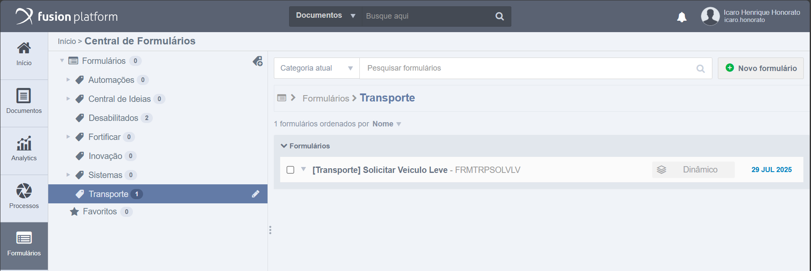
💡 Configuração da categoria e nomenclatura do formulário no Fusion Platform
📋 Elementos da Configuração
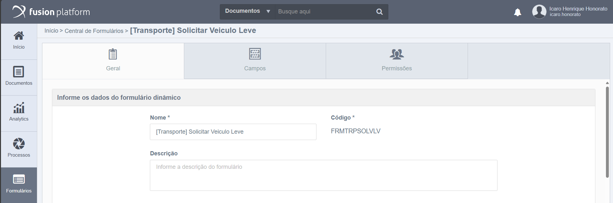
💡 Configuração do código do formulário seguindo padrões estabelecidos
📏 Regras para Código do Formulário
O código deve começar com FRM
Máximo de 12 caracteres no total
Todas as letras em MAIÚSCULA
Incorreto: frmtrpsolvlv
Caracteres devem remeter ao formulário
SOLVLV: Solicitar Veículo Leve
✅ Exemplos de Códigos Corretos:
FRMTRPSOLVLV - Transporte Solicitar Veículo LeveFRMCMPMATOBR - Compras Material ObraFRMRHSOLFER - RH Solicitação FériasFRMFINAPPAG - Financeiro Aprovação Pagamento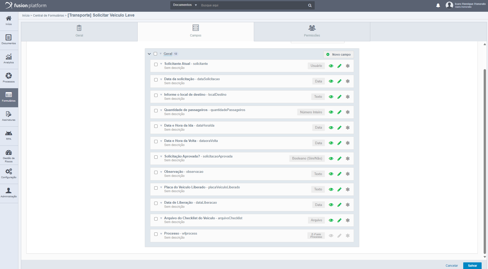
💡 Estrutura dos campos do formulário principal no processo
📋 Diretrizes para Campos do Formulário
Os campos do formulário principal serão utilizados ao longo de todo o processo e serão selecionados como editáveis e/ou obrigatórios nas atividades da modelagem criada.
Título: Deve ser o mais coerente possível com o processo
Código: Deve corresponder semanticamente ao título seguindo o padrão:
Todas as letras minúsculas
Código: solicitante
Primeira palavra minúscula, primeiras letras das palavras subsequentes maiúsculas
Código: dataSolicitacao
O último campo chamado "Processo" é criado automaticamente quando o formulário principal é vinculado ao processo.
✅ Exemplos de Campos Corretos:
Código: solicitanteAtual
Código: dataSolicitacao
Código: localDestino
Código: quantidadePassageiros
Código: observacao
Código: wfprocess (automático)
👁️ Compreendendo os Ícones de Cada Campo
Cada campo possui três ícones que controlam sua visibilidade, editabilidade e obrigatoriedade
Campo visível no formulário
Campo não visível no formulário
Campo editável pelo usuário
Campo não editável (somente leitura)
Campo obrigatório
Campo não obrigatório (opcional)
Recomendação: Deixe para habilitar a obrigatoriedade de um campo na modelagem do processo, não diretamente no formulário.
Se marcar o campo como obrigatório aqui no formulário, ele será obrigatório em todas as atividades em que aparecer, o que pode não ser desejado.
Configure a obrigatoriedade específica para cada atividade durante a modelagem do processo, permitindo maior flexibilidade e controle.
Marcar campos como obrigatórios no formulário quando eles devem ser opcionais em algumas atividades do processo.
Com o formulário criado e os campos necessários definidos, agora vamos mapear quais campos irão compor cada atividade do processo e definir suas configurações específicas.
📋 Tipos de Configuração de Campos
Configuração: Campo selecionado
Editável: ❌ Não marcado
Obrigatório: ❌ Não marcado
Resultado: Campo apenas para visualização
Configuração: Campo selecionado
Editável: ✅ Marcado
Obrigatório: ❌ Não marcado
Resultado: Usuário pode inserir valores, mas não é obrigatório
Configuração: Campo selecionado
Editável: ✅ Marcado
Obrigatório: ✅ Marcado
Resultado: Fusion obriga preenchimento antes de avançar
Antes de visualizar os exemplos das atividades, é importante entender como acessar suas configurações no Fusion Platform.
⚙️ Métodos de Acesso às Configurações
Aplicável a: Solicitar Veículo, Analisar Solicitação, Liberar Veículo
- Clique sobre a atividade no diagrama BPMN
- Um ícone será habilitado no canto superior esquerdo da atividade
- Clique neste ícone para abrir o menu
- O menu com campos para seleção e configuração será exibido
Aplicável a: Notificar Solicitante
- Clique sobre a atividade "Notificar Solicitante"
- No menu lateral direito que aparece
- Clique na opção "Editar" em "Modelo do E-mail"
- A tela de configuração do e-mail será exibida
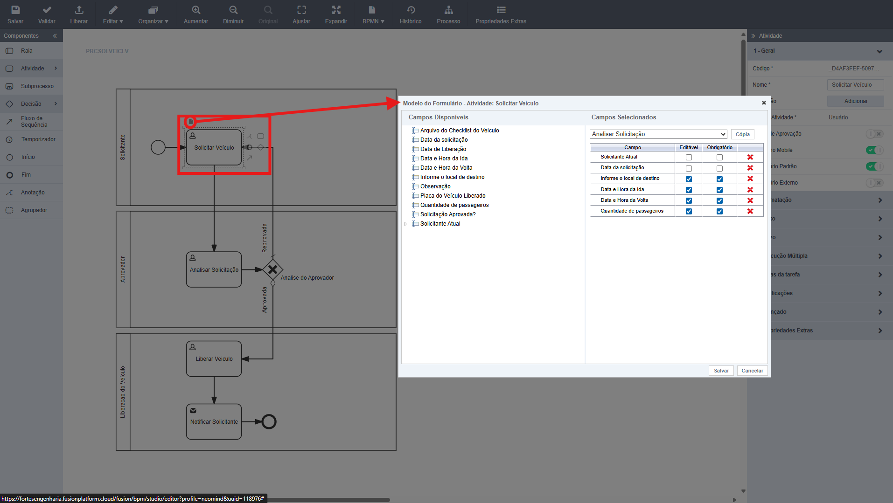
💡 Primeira atividade do processo - preenchimento inicial da solicitação
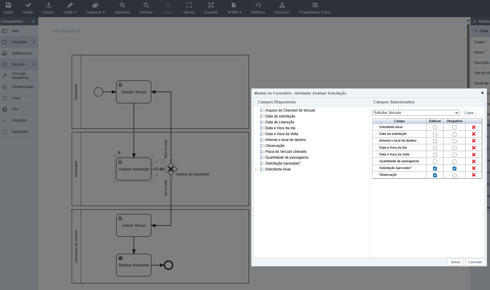
💡 Segunda atividade - análise e aprovação da solicitação
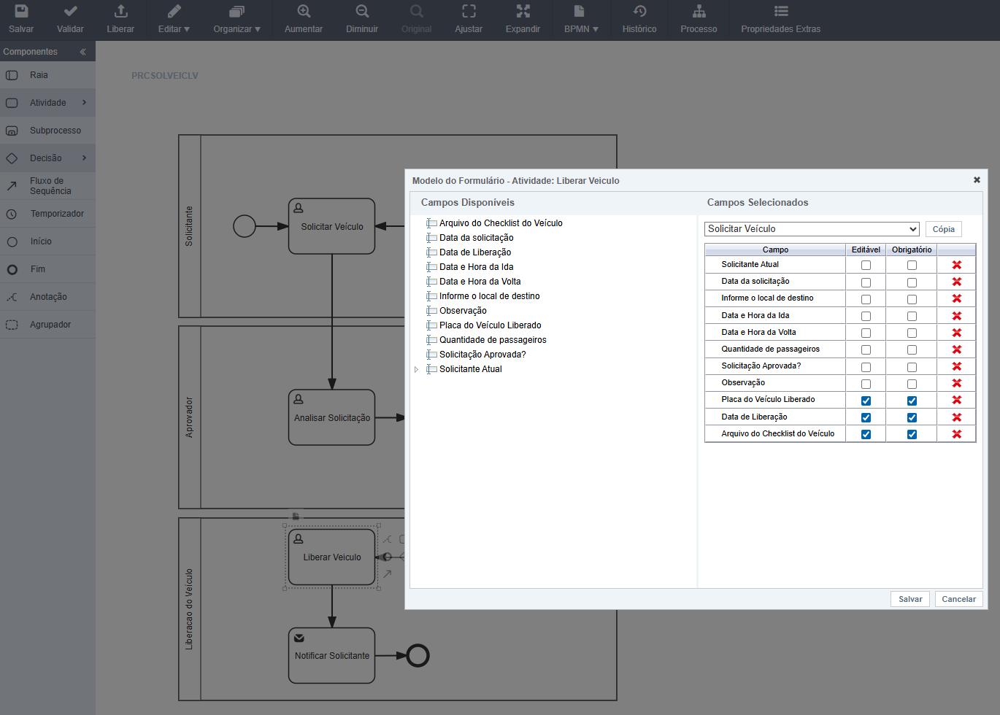
💡 Terceira atividade - liberação e controle do veículo
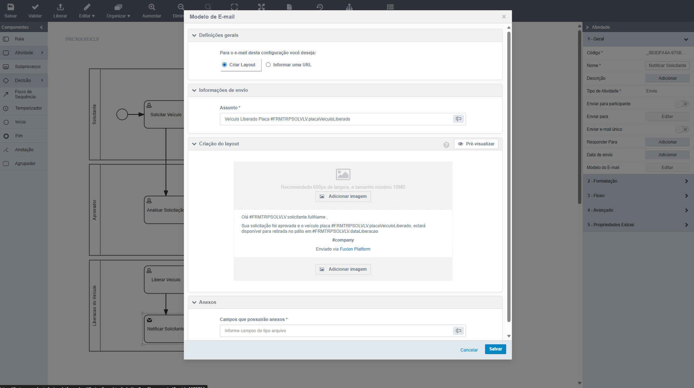
💡 Atividade final - notificação por e-mail do resultado
- Clique sobre a atividade "Notificar Solicitante" no diagrama
- No menu lateral direito que aparece
- Clique na opção "Editar" em "Modelo do E-mail"
- A tela de configuração do e-mail será exibida (conforme imagem acima)
✉️ Elementos da Atividade de Notificação
Na grande maioria das vezes, será utilizada a opção de "Criar Layout"
Deve-se informar o assunto do e-mail podendo selecionar um ou mais campos do formulário para compor o assunto
Aqui será escrita a mensagem do e-mail. O usuário pode:
- Criar o texto que achar necessário
- Utilizar campos do formulário para compor a mensagem
- Adicionar imagens no cabeçalho e rodapé
Caso seja necessário, podem ser incluídos campos do tipo arquivo que serão os anexos do e-mail
Para informar o destinatário do e-mail, siga as opções apresentadas no menu lateral direito ao clicar sobre a atividade de notificação do processo.
No processo em questão, o destinatário é o solicitante e foi configurado conforme mostrado na imagem a seguir:
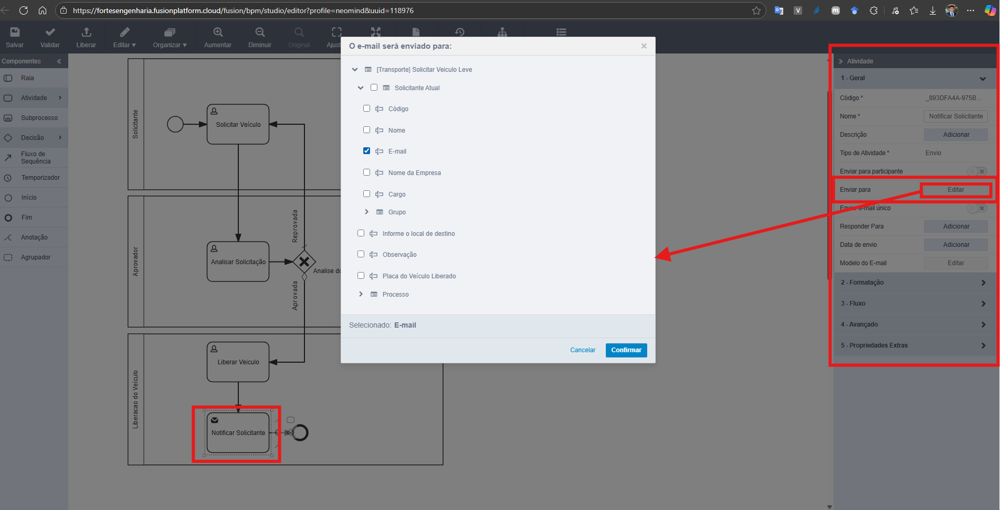
💡 Configuração específica para envio ao solicitante do processo
Agora vamos acompanhar como o processo funciona na prática, desde a solicitação inicial até a finalização, mostrando cada etapa em execução no Fusion Platform.
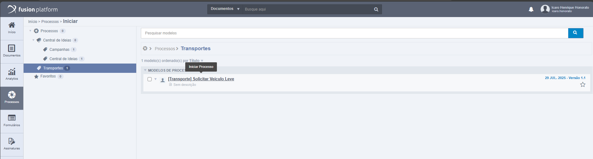
🚀 Pontos Importantes desta Tela:
- Seleção de Processo: Interface para escolher o processo desejado
- Navegação Intuitiva: Categorias organizadas por tipo de processo
- Início Rápido: Basta clicar no nome do processo para iniciar imediatamente
- Visão Centralizada: Todos os processos disponíveis em um local
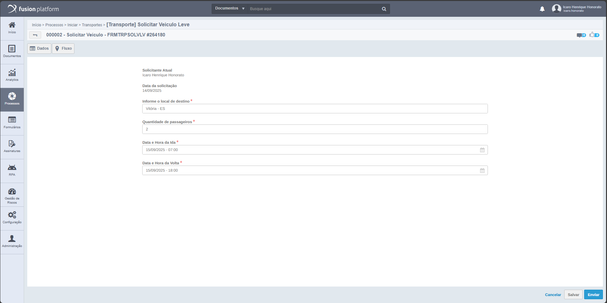
✅ Pontos Importantes desta Etapa:
- Formulário Principal: Todos os campos definidos na modelagem aparecem
- Campos Obrigatórios: Marcados com asterisco vermelho (*)
- Validação: Sistema impede avanço sem preenchimento obrigatório
- Interface Intuitiva: Layout limpo e organizado para o usuário
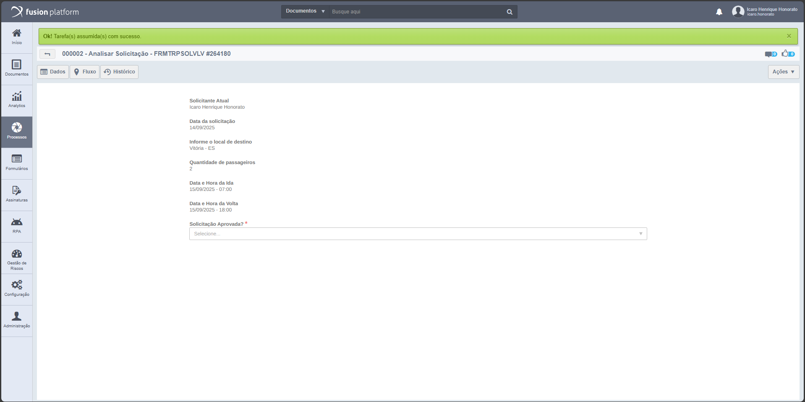
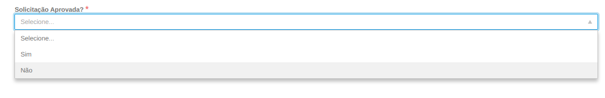
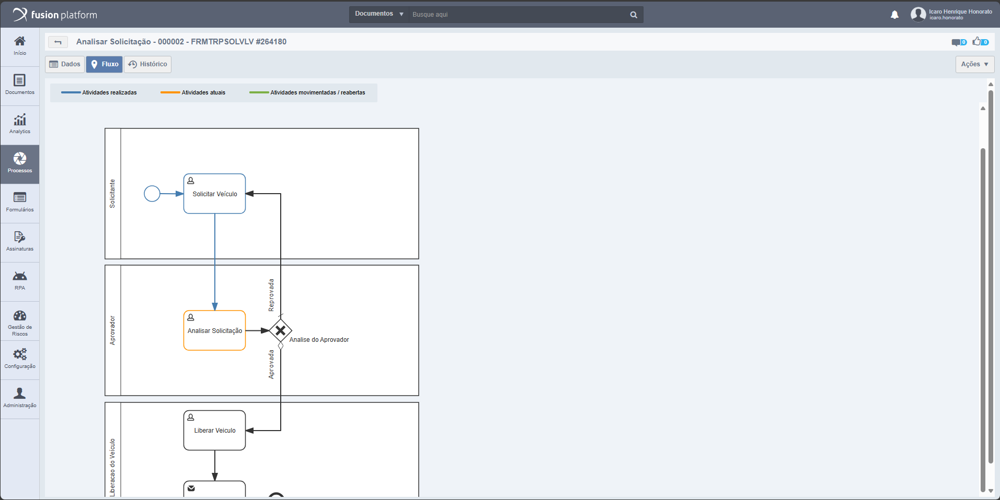
⚡ Pontos Importantes desta Etapa:
- Campos de Leitura: Informações da solicitação aparecem apenas para visualização
- Campo de Decisão: "Solicitação Aprovada?" com opções Sim/Não
- Notificação Verde: Confirmação de tarefa assumida com sucesso
- Responsabilidade: Tarefa atribuída ao coordenador correto
- Acompanhamento: O usuário pode acompanhar o fluxo clicando na guia "Fluxo" no canto esquerdo superior da tela
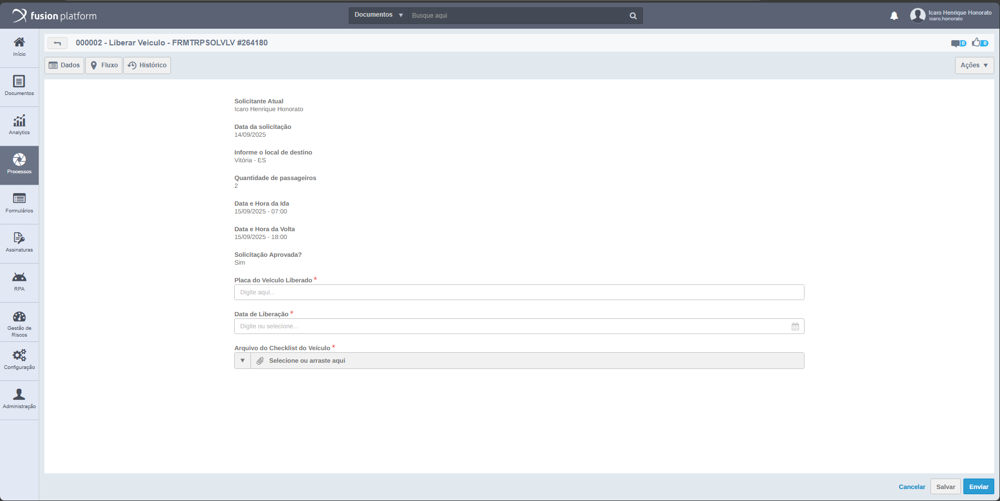
🎯 Pontos Importantes desta Etapa:
- Campos Específicos: Placa do Veículo Liberado, Data de Liberação
- Upload de Arquivo: Checklist do Veículo pode ser anexado
- Campos Obrigatórios: Marcados conforme configuração da atividade
- Controle de Qualidade: Documentação necessária para liberação
- Acompanhamento: O usuário pode acompanhar o fluxo clicando na guia "Fluxo" no canto esquerdo superior da tela
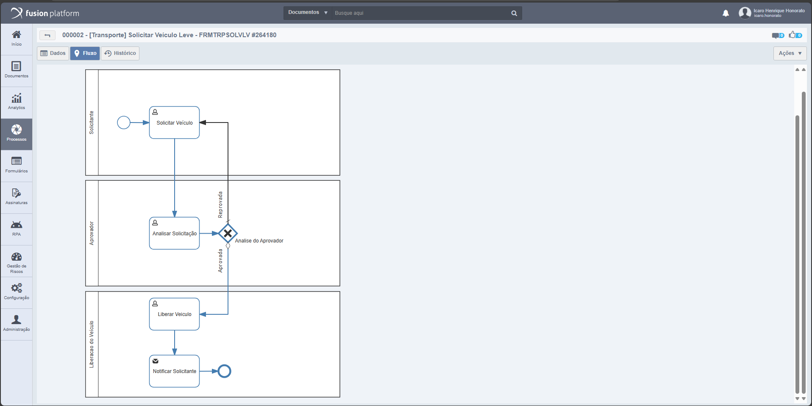
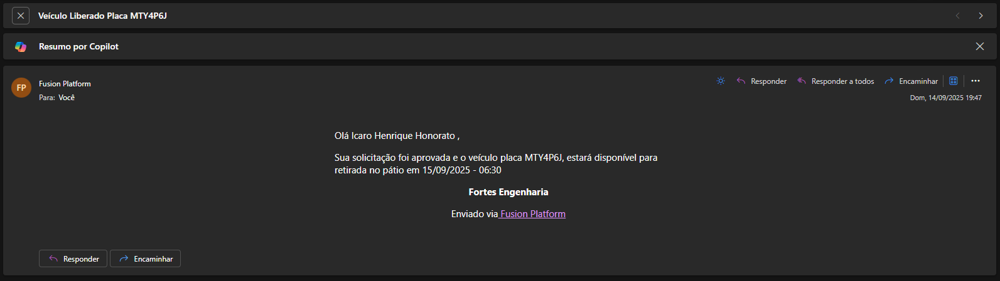
🏆 Pontos Importantes desta Etapa:
- Histórico Completo: Todos os campos preenchidos ao longo do processo
- Dados Consolidados: Informações de todas as etapas em um local
- Auditoria: Rastro completo de quem fez o que e quando
- Documentação: Processo finalizado com todos os anexos
- Confirmação por Email: Notificação automática enviada ao solicitante confirmando a liberação do veículo
🏆 Resultados Alcançados
- Processo digitalizado end-to-end
- Eliminação de papéis e e-mails
- Aprovações automáticas por sistema
- Redução significativa do tempo
- Rastreabilidade completa do processo
- Histórico de todas as ações
- Identificação de responsáveis
- Auditoria automática
- Padronização de procedimentos
- Validações automáticas
- Documentação obrigatória
- Redução de erros humanos
- ✅ Categoria definida e condizente com o processo
- ✅ Nome do formulário segue padrão [CATEGORIA] + Nome Específico
- ✅ Formulário principal identificado com sufixo "Principal" quando necessário
- ✅ Campos essenciais mapeados e organizados logicamente
- ✅ Validações de campos obrigatórios configuradas
- ✅ Layout responsivo e intuitivo para o usuário final
🚗 1. Solicitar Veículo (User Task)
- Responsável: Funcionário/Encarregado da obra
- Formulário: Dados do solicitante, tipo de veículo, período, destino
- Validações: Campos obrigatórios, datas futuras, justificativa
🔍 2. Analisar Solicitação (User Task)
- Responsável: Coordenador de Frota/Administração
- Ações: Verificar disponibilidade, validar necessidade
- Integrações: Consulta agenda de veículos, sistema de frota
⚖️ 3. Análise do Aprovador (Gateway)
- Responsável: Gerente/Diretor (conforme valor/período)
- Decisões: Aprovar, Reprovar, Solicitar Ajustes
- Critérios: Necessidade, custos, disponibilidade
✅ 4. Liberar Veículo (Service Task)
- Ações: Reservar veículo, gerar autorização
- Integrações: Sistema de frota, agenda, controle de chaves
- Documentos: Termo de responsabilidade, checklist
📧 5. Notificar Solicitante (Send Task)
- Aprovado: Dados do veículo, horário de retirada, responsabilidades
- Reprovado: Motivo da recusa, sugestões alternativas
- Canais: E-mail, SMS, notificação no sistema
- Solicitar Veículo: Preenchimento, validações, campos obrigatórios
- Analisar Solicitação: Consulta disponibilidade, histórico
- Gateway de Aprovação: Regras por valor, hierarquia, prazos
- Liberar Veículo: Reserva automática, geração de documentos
- Notificar Solicitante: E-mails, templates, informações corretas
- Fluxo Completo Aprovado: Solicitação → Análise → Aprovação → Liberação → Notificação
- Solicitação Reprovada: Análise negativa → Gateway rejeita → Notificação de recusa
- Conflito de Agenda: Veículo indisponível → Sugestão de alternativa
- Aprovação Condicional: Ajustes solicitados → Retorno para solicitante
- Configuração Inicial: Importar modelo BPMN para o Fusion Platform
- Formulários: Criar interfaces para cada User Task
- Regras de Negócio: Configurar gateway e condições
- Integrações: Conectar com sistema de frota existente
- Testes: Validar cada atividade individualmente e fluxo completo
- Treinamento: Capacitar usuários em cada atividade
- Go-Live: Ativar processo em produção com acompanhamento
Dias 1-3: Configurar "Solicitar Veículo" e formulários
Dias 4-6: Configurar "Analisar Solicitação" e integrações
Dias 7-9: Configurar Gateway e regras de aprovação
Dias 10-12: Configurar "Liberar Veículo" e automatizações
Dias 13-14: Configurar notificações e testes finais
- Solicitar Veículo: Tempo médio de preenchimento < 5 min
- Analisar Solicitação: Análise em até 2 horas úteis
- Aprovação: Decisão em até 4 horas úteis
- Liberação: Disponibilização em até 1 hora
- Notificação: Comunicação imediata após decisão
- Integração com GPS para rastreamento em tempo real
- App mobile para solicitações em campo
- IA para sugestão automática de veículos disponíveis
- Dashboard executivo com métricas da frota
- Integração com sistema de combustível e manutenção
🎥 Treinamento em Vídeo - BPM Fusion Platform
Acompanhe o treinamento completo em 7 vídeos que demonstram passo a passo a implementação de BPM no Fusion Platform, desde os conceitos básicos até o teste prático do processo criado.
📚 Vídeo 01 - Introdução
Conceitos fundamentais de BPM, metodologias aplicáveis e visão geral do processo de solicitação de veículo.
🎨 Vídeo 02 - Modelagem Inicial
Criação do diagrama BPMN, definição de atividades e configuração inicial do processo no sistema.
📝 Vídeo 03 - Formulários (Parte 1)
Primeira parte da construção de formulários: configuração básica, campos principais e validações.
📝 Vídeo 04 - Formulários (Parte 2)
Segunda parte da construção de formulários: campos específicos, configurações avançadas e validações.
🔗 Vídeo 05 - Vinculação e Atividades
Vinculação dos formulários ao processo BPMN e configuração detalhada de cada atividade do fluxo.
👥 Vídeo 06 - Papéis e Liberação
Criação de papéis, configuração de participantes e liberação final da modelagem para execução.
🧪 Vídeo 07 - Teste Prático
Teste prático do processo criado, demonstração de execução e validação final do sistema.
- Ordem recomendada: Assista os vídeos na sequência numérica (01 a 07) para acompanhar o fluxo completo
- Duração total: 45 minutos e 42 segundos de conteúdo prático
- Navegação: Clique em qualquer card de vídeo para reproduzir no player principal
- Controles: Use os controles do player para pausar, avançar ou retroceder
- Complemento: Os vídeos complementam perfeitamente o conteúdo escrito deste tutorial
Veja exatamente como executar cada passo no Fusion Platform
Pause, retroceda e avance conforme sua necessidade
Assista quantas vezes precisar para dominar o conteúdo
🔍 Framework de Maturidade de Processos - FORTES Engenharia
Permite que a empresa identifique exatamente em qual estágio está, entenda os próximos passos e planeje a evolução de forma estruturada e mensurável.
🔍 Diagnóstico Inicial
O que é: Primeira análise dos processos existentes na empresa
✅ Checklist de Conclusão:
- Mapeamento da cadeia de valor
- Identificação dos processos principais
- Entrevistas com stakeholders
- Documentação do AS-IS
🎯 Benefícios Alcançados:
- Visão clara dos processos atuais
- Identificação de gargalos
- Base para planejamento
🗺️ Mapeamento de Processos
O que é: Modelagem visual detalhada dos processos em BPMN
✅ Checklist de Conclusão:
- Diagramas BPMN dos processos AS-IS
- Identificação de raias e responsabilidades
- Mapeamento de fluxos e decisões
- Documentação de regras de negócio
🎯 Benefícios Alcançados:
- Processos visualmente claros
- Comunicação padronizada
- Base para análise
📋 Levantamento de Requisitos
O que é: Coleta detalhada de necessidades e especificações
✅ Checklist de Conclusão:
- Entrevistas com usuários finais
- Documentação de requisitos funcionais
- Especificação de regras de negócio
- Definição de indicadores (KPIs)
🎯 Benefícios Alcançados:
- Requisitos claros e validados
- Base para desenvolvimento
- Alinhamento com usuários
🚧 Registro de Gargalos e Melhorias
O que é: Identificação e documentação de problemas e oportunidades
✅ Checklist de Conclusão:
- Análise de gargalos identificados
- Priorização de melhorias
- Documentação de causas raiz
- Planejamento de ações corretivas
🎯 Benefícios Alcançados:
- Problemas identificados e priorizados
- Plano de melhorias estruturado
- Base para otimização
✅ Validação com as Áreas
O que é: Aprovação e validação dos processos redesenhados
✅ Checklist de Conclusão:
- Apresentação dos processos TO-BE
- Coleta de feedback das áreas
- Ajustes e refinamentos
- Validação final e aprovação
🎯 Benefícios Alcançados:
- Processos validados pelas áreas
- Consenso organizacional
- Pronto para implementação
🎛️ Painel de Controle - Status dos Estágios
⚡ Ações Rápidas:
Guia BPM para FORTES Engenharia — Vitória-ES